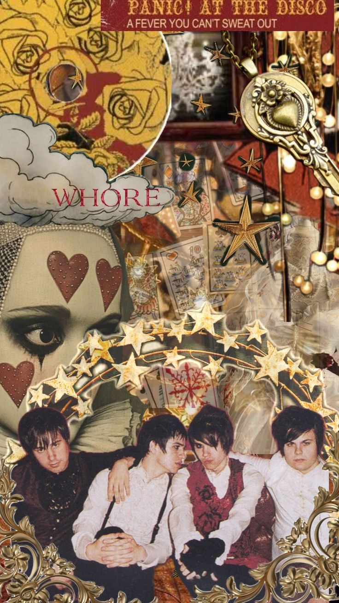
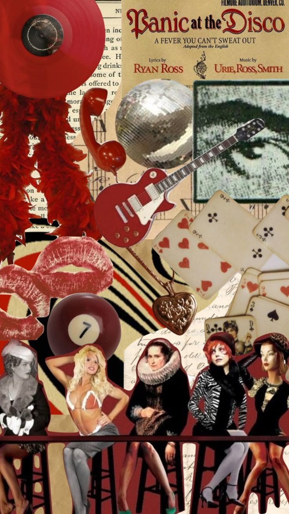
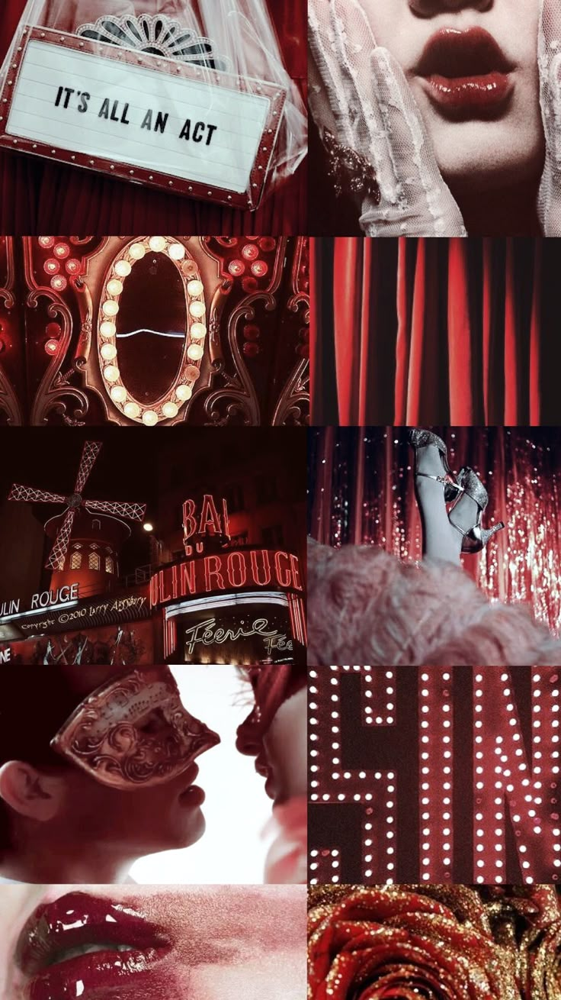

En esta sección van a encontrar el moodboard creado por la desarrolladora de este sitio web, que sirvió como inspiración para la estética del mismo, al igual que collages sacados de Pinterest en honor a este álbum tan controversial e icónico.
Moodboard diseñado por la desarrolladora de este sitio web.
Collages de Pinterest
Fusión de elementos vintage con una estética cabaret que refleja la imagen teatral y provocadora de la banda.

Collage inspirado en A Fever You Can't Sweat Out.
Estética "cherry lady" combinada con detalles retro y guiños a la feminidad glamorosa del siglo pasado.

Collage inspirado en A Fever You Can't Sweat Out.
Wallpaper que mezcla elementos de cabaret, teatro dramático, época victoriana y una fuerte presencia del color cereza como símbolo visual.

Wallpaper inspirado en la estética de A Fever You Can't Sweat Out.